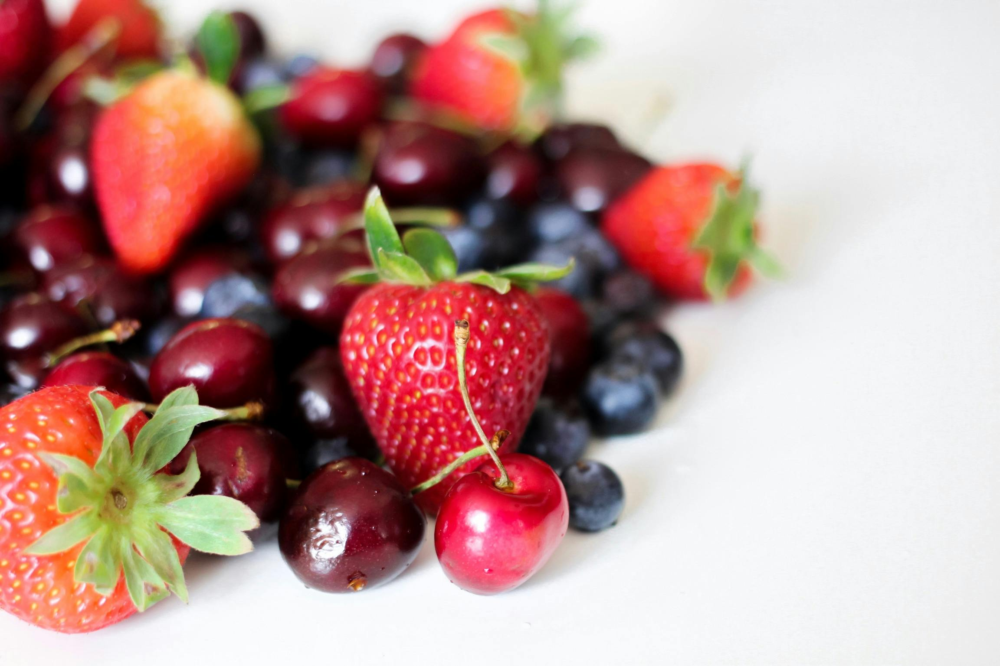

Sutter Home Cabernet Sauvignon
A smooth, approachable red wine with rich flavors of black cherry, currant, and a hint of toasted oak. Its medium body and soft tannins make it an easygoing choice for everyday sipping or casual meals.
Rating: 4 Corks

Yellow Tail Big Bold Red
It lives up to its name with an intense, full-bodied blend bursting with ripe berries, dark chocolate, and a touch of spice. It's a bold, fruit-forward wine that's perfect for those who like their reds rich and flavorful.
Rating: 4 Corks

Barefoot Zinfandel
This bottle offers a lively, fruit-packed experience with notes of jammy berries, sweet plum, and a whisper of spice. Light to medium-bodied, it's a fun, easy-drinking red that's ideal for casual get-togethers or laid-back evenings.
Rating: 3 corks
UnWINEd Reviews
1234 Sip Street
Missoula, MT 59801
(406) 555-4747